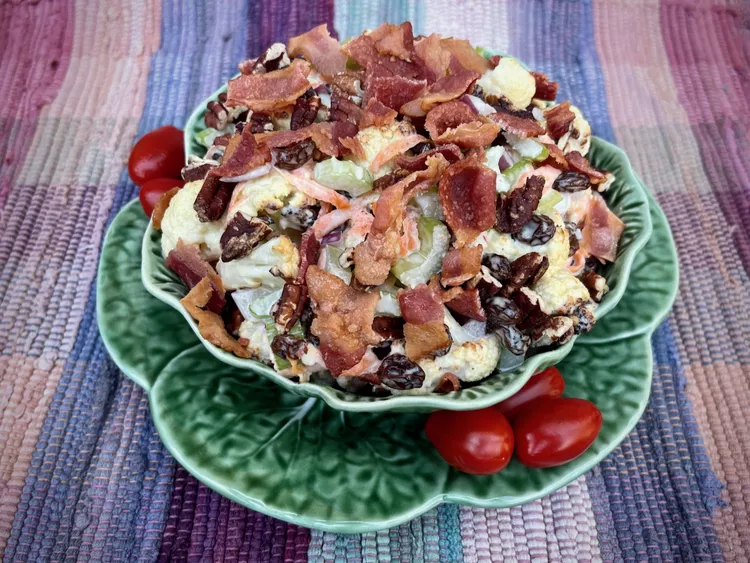

Roasted Cauliflower Salad

Roasted Cauliflower Salad
Here's a salad that uses roasted cauliflower as the base. Crispy, salty bacon adds a great crunchy texture to this sweet and savory salad.
The roasted cauliflower salad is a delightful medley of flavors and textures that showcases the versatility of this humble vegetable
Ingredients
- 1 medium head cauliflower, cut into bite-size pieces
- 1 tablespoon olive oil
- ½ teaspoon salt, or to taste
- ¼ teaspoon freshly ground black pepper
- ½ cup chopped celery
- ½ cup raisins
- ½ cup shredded carrots
- ½ cup mayonnaise
- ¼ cup chopped red onion
- 2 teaspoons white sugar, or to taste
- ⅓ cup toasted chopped pecans
- 3 strips cooked bacon, crumbled
How to Make Roasted Cauliflower Salad Step-By-Step
- Preheat the oven to 425 degrees F (210 degrees C) and line a 12 x 18 inch baking sheet with parchment paper
- Combine cauliflower pieces, olive oil, salt, and pepper in a large bowl and toss to combine. Spread out seasoned cauliflower in a single layer on the prepared baking sheet.
- Roast in the preheated oven until the edges of the cauliflower begin to brown, 10 to 15 minutes.
- Remove from the oven and allow to cool, slightly, about 5 minutes.
- Combine celery, raisins, carrots, mayonnaise, red onion, and sugar in the same bowl. Add roasted cauliflower pieces and toss to coat.
- Transfer salad to a serving bowl and garnish with toasted pecan pieces and crumbled bacon.